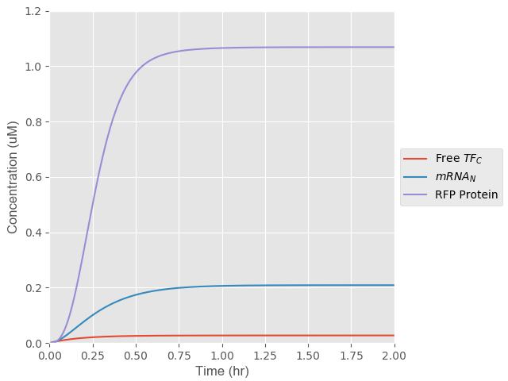
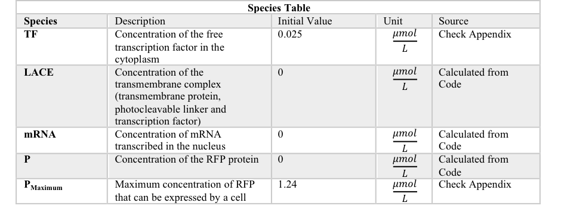

‘LAME (Light Activated Mammalian Expression) From light to organs’
A mathematical model of how HEK 293 cells are guided to form structured tissues
The Science behind LAME
LAME models the light activated expression of RFP proteins within genetically engineered HEK 293 cells.
When light shines onto our HEK 293 cells the photocleavable linker, which anchors the RFP transcription factor (TF) onto the outer membrane of the cell, becomes cleaved. The TF is attached to a dCas9,
therefore, once the photocleavage occurs the TF is guided to the RFP promoter in the cell nucleus with the help of the dCas9. This mechanism could be adapted and used to induce the production of the surface proteins that cause
mammalian cells to adhere to each other, cadherin, upon demand. As such, our technology could be used to guide cells with light to create highly specific ccellular tissues.
Breakdown of the cellular mechanisms involved in the expression of RFP:

Legend:
LACETF = Photocleavable (PhoCl) linker attached to the outter membrane of the cells and the TF
LACE = Protein on cells' outer membrane attached to a part of the cleaved PhoCl linker
TFC = Free TF in the cytoplasm of the cell
TFN = Free TF in the nucleus of the cell
PrRFP = RFP Promoter
PrRFP + TFN = TF in the nucleus bound to the RFP Promoter
mRNAN = mRNA in the cell nucleus
mRNAC = mRNA in the cell cytoplasm
PRFP = RFP translated protein
In order to simplify the cellular mechanisms involved in RFP expression, we decided to divide our model into three main steps:
- 1. Cleavage of Photocleavable (PhoCl) Linker
- 2. Transcription
- 3. Translation

In our LAME model the rate kinetics of our system are induced with photocleaving.
This is a unique twist we incorporated in contrast to conventional mammalian cell expression systems. In addition, the attachment of a dCas9
at the end of our TF, is another unique adaptation we incorporated into our model.
Model Aims
- Determine the rate limiting cellular mechanism
- Optimize the rate limiting parameters by using a conventional (Sensitivity Analysis) and an innovative (Paramter Sampling) approach
- Determine the range of optimal light intensities and light pulses our Wet Lab should test
- Conduct a Cost Analysis to evaluate the economic viability of our optogenetic tool
Modelling Steps
1.) Cleavage of PhoCl linker

Step 1: Photocleavage and release of the RFP TF in the cytoplasm of the cell
Location: Outer cell membrane
The first step of our simulation is the photocleavage of PhoCl, which results in the release of the RFP TF in the cytoplasm of the cell. We introduced two degradation factors within our ODEs, in order to account for the half-life of the RFP TF and the
continual transport of TF from the cytoplasm to the nucleus of the cell.

The photocleavage is dependent on light intensity (L). The Hill equation is commonly used to
fit inducible promoter genetic circuits. We therefore decided to adapt the Hill equation in our ODE to evaluate
the effect different light intensities would have on the rate of photocleavage of the LACETF complex.

2.) Transcription

Step 2: Transcription
Location: Nucleus
The second step of our simulation is the production of mRNA from transcription.
In order for transcription to take place the TF needs to be transported from the cytoplasm of the cell to the nucleus. The TF is guided into the
nucleus of the cell to the RFP promoter with the help of dCAS9. The rate at which the TF enters the nucleus of the cell and binds to the RFP promoter
affects the rate at which transcription takes place. We incorporated two degradation factors to account for the half-life of the mRNA and the transport of the mRNA from the nucleus of the cell
to the cytoplasm.
3.) Translation
Step 3: Translation
Location: Cytoplasm
The third step of our simulation is the production of the RFP protein from translation. The change in concentration of the RFP protein is dependent on three main factors. Firstly, the rate at which mRNA is transported from the nucleus to the cytoplasm, this is
represented with the letter 'β'. Secondly, the rate of translation, represented by 'k3', and thirdly the maximum amount of RFP protein a cell can express, represented by the letter 'η'. A degradation term was introduced to represent the degradation of
RFP over time because of dilution due to cell growth and the limited half-life of the RFP protein.

Results
From our LAME simulation we compiled our graphs, evaluated their results
and determined the optimal range of values our Wet Lab team should evaluate in order to optimize the rate-limiting parameters of the system.
Determining the rate limiting step in RFP expression
We used rate kinetics modelling to determine the rate limiting step in the cellular mechanisms involved in the light-activated translation of RFP.
Click here to check out our approaches and assumptions!

Figure 1: Demonstrates the rate of the cellular mechanisms involved in the expression of RFP protein
In Figure 1 the photocleavable expression system is induced with a 27 W/cm2 light intensity. The concentration of the free TF and mRNA in the nucleus appear to be much smaller than that of the RFP protein.
Therefore, we decided to plot a second figure, in which we re-scaled the graph, in order to evaluate the rate of photocleaving and transcription.

Figure 2: Depicts a re-scaled plot of Figure 1 in order to view the rate at which the TF is released in the cell cytoplasm
| Step |
Time taken to plateau (hr) |
| Cleavage of PhoCl Linker |
0.1 |
| Transcription |
0.1 |
| Translation |
3 |
A rate limiting step in a process is the step that takes the longest amount of time to reach its maximum value, essentially the step that takes the longest time to plateau.
We identified the rate of translation as the rate limiting step in this cellular mechanism.
The rapidity of our LIT technology is vital, therefore we decided to identify the rate limiting parameters within the ODE that describe the translation of mRNA to RFP protein.
Optimizing Light Intensity
Our LAME model is initiated with the photocleavage of a PhoCl Linker that leads to the release of the TF in the cells cytoplasm. Therefore, we thought it would be interesting to evaluate the effect
different light intensities had on the concentration and rates of expression of RFP protein in the cell. The values we selected to test fell within the range of 0 W/cm2 and
54 W/cm2, where 0 W/cm2 represented our system in its off state and 54 W/cm2 represented the maximum light intensity mammalian cells can withstand
before they started to die.
Sensitivity Analysis of Light Intensities

Figure 3: Evaluates the effect light intensity has on the concentration and rate of expression of RFP protein in the cell with the use of a Sensitivity Analysis
From Figure 3 it is evident that an increase in the light intensity used to photocleave PhoCl corresponds to an increase in the concentration of RFP expressed in the cells.
Optimizing the parameters in the rate-limiting step
We decided to optimize the rate-limiting parameters present in the ODE which describes the translation of RFP protein in the cell. The two rate-limiting parameters identified were: β (the rate of transport of mRNA from the nucleus to the cell cytoplasm) and d3 (the degradation rate of the RFP protein).
We decided to optimise the values for each parameter by using two approaches, a Sensitivity Analysis and Parameter Sampling. The maximum and minimum values that could be assigned to each parameter were determined from literature.
Optimizing the rate at which mRNA is transported to the cell nucleus (β)
The rate of translation is dependent on the rate at which mRNA is transported from the nucleus to the cytoplasm of the cell. Ideally, we would want a high β value to increase the rate at which the mRNA is transported to the cytoplasm of the cell. This would increase the rate of translation.
Sensitivity Analysis for β

Figure 5: Evaluates the effect β has on the rate of RFP expression in the cytoplasm of the cell with the use of a Sensitivity Analysis
Sensitivity Analyses determine the magnitude of the effect a particular parameter has on the output of a model. Therefore, we first decided to run a Sensitivity Analysis to determine/ validate that β has a large contribution
on the concentration of ΡΦΠ expressed in the cells. In order to do this a range of β values, from other similar cellular mechanisms, were inputted into our model. From Figure 5 we determined the optimum β value to
operate our cellular mechanism at is 2.20Ε+00 1/s. We therefore, decided to conduct Parameter Sampling to ensure the value we select
to optimize our β to can realistically be achieved in our cellular mechanism.
Parameter Sampling for β

Figure 6: Evaluates the effect β has on the rate of RFP expression in the cytoplasm of the cell with the use of Parameter Sampling
Parameter Sampling allowed us to take a series of factors into consideration when optimising the value of β.
The values of β represented in figure 6 are more realistic and significantly lower than
the ones obtained from the Sensitivity Analysis. This is because a series of factors were taken into consideration when
creating a normal distribution of the possible β values for our technology. These factors include: the size,
origin and operational pH the cellular mechanism from which the data was sourced form. From figure 6 we determined the optimum
β value that would result in the highest concentration of RFP expressed in our cells was 1.3E-03 1/s.
Interested in the steps and weighting system we used for our Parameter Sampling? Click away
Optimizing the degradation rate (d3) of the RFP protein
The parameter d3 represents the rate at which the concentration of RFP decreases due to protein degradation and dilution.
Therefore, we would want to minimize the value of d3 so as to decrease the time it takes for the maximum amount of RFP to be expressed in the cell.
Sensitivity Analysis for d3

Figure 7: Evaluates the effect d3 has on the rate of RFP expression in the cell with the use of a Sensitivity Analysis
In Figure 7 t is evident that from the Sensitivity Analysis d3 is a large contributor to the final concentration of
RFP that can be expressed in the cells. Therefore, we decided to progress and carry out a Parameter Analysis in order to optmise
our d3 value.
Parameter Sampling for d3

Figure 8: Evaluates the effect d3 has on the rate of RFP expression in the cell with the use of Parameter Sampling
Parameter Sampling allowed us to take a series of factors into consideration when optimising the value of d3.
From figure 8 we determined the optimum d3 value to maximise the concentration of RFP expressed in the
cells is 2.2E-05 1/s.
Interested in seeing what these factors are and how Parameter Sampling is carried out? Click away
Determining the effect light pulsing has on the rate of RFP expression
We determined increasing light intensity has a directly proportional increasing effect on the concentration
and the rate of expression of RFP in the cell. We therefore decided to evaluate the effect other light properties would have on our system. More specifically, we wanted to evaluate whether light pulsing had an effect on RFP expression. This would allow us to see whether by periodically activating and
deactivating our light induced system we would observe the expression of a larger concentration of RFP, at a faster rate, in the cells.
We first ran a control simulation, where we introduced one long pulse of 7 hours of light, to ensure we received a curved response that would simulate the activation and deactivation of our cellular mechanisms over a defined period of time.

Figure 9: Evaluates the effect one long pulse has on the rate kinetics of the expression of RFP in the cell cytoplasm
From Figure 9 it is evident the behavior of all the species produced after each step involved in the expression of RFP are represented in a dumb bell shaped curve. This is justifiable, as when the light is turned off we expect the rate of product production to become smaller than the rate of product degradation. Therefore, as time passes the concentration of each product from each step is expected to decrease.
We then wanted to evaluate the effect pulsing, for periods of 2 hours, would have on the rate kinetics involved in the expression of RFP in the cytoplasm of the cell.

Figure 10: Evaluates the effect pulsing light in 2 hour intervals has on the rate kinetics involved in the rate and concentration of RFP expressed in the cytoplasm of the cell
From Figure 10 we discovered that if we pulse light on the cells for a period of 2 hours over a 24-hour period, we experienced a small decrease (14% decrease) in the concentration of RFP expressed in the cytoplasm of the cells.
Optimized conditions
The biggest increase in the rate of RFP expression in the cytoplasm of the cells occurs when the value of 'β’ increases and the values of ‘d3’ decreases. This is something we expected, as the larger the value of β the faster the speed at which mRNA is transported to the cytoplasm of the cell from the nucleus and therefore the faster the rate of translation. In addition, the lower the d3 value the slower the degradation of mRNA in the cell. Thus, the combination of both of these phenomena results in a faster and greater concentration of RFP expressed in the cytoplasm of the cell.
| Optimized Paramter |
Value |
| β (1/s) |
2.2E+00 |
| d3 (1/s) |
6.4E-05 |
Running the model with optimized parameters
We ran our rate kinetics model with our newly optimized parameters and determined that with our optimized parameters a larger concentration of RFP was expressed in the cytoplasm of the cell. However, the same amount of time was taken for the RFP expression rate to plateau. Therefore, this
means that although the concentration of RFP expressed in the cytoplasm of the cell was optimized this step prevails as the rate-limiting step in the network of cellular mechanisms involved.
Figure 12: Depicts the optimized and unoptimized rate kinetics for the translation of the RFP protein
Cost Analysis
We ran a Cost Analysis to ensure our LIT optogenetic tool was an affordable technology current labs could use to replace alternative technologies.
We focused on identifying the main operational costs a user would incur. We determined the most critical ones were: the light intensity they used to activate the HEK 293 cellular mechanism; and the frequency of light pulsing.
We created a function in Python that took costs incurred for both methods into consideration, where we attempted to identify the most cost-efficient operational conditions for our tool.
Figure 13: Outlines the operating costs incurred for operating the optogenetic tool with a range of light intensities with no light pulsing present

Figure 14: Outlines the operating costs incurred for pulsing the light source of the optogenetic tool over a range of frequencies at a light intensity of 27 W/cm2
Figure 15: Comparison of the effects of pulsing and light intensity on the overall cost
We decided to plot both the costs incurred for different light intensities and the pulsing durations on the same graph to evaluate their synergistic effect.
The most optimum operating conditions for our optogenetic tool were defined as those at which both lines intersect. Beyond the point of intersection it was evident that the operational costs
for the optogenetic tool were too high. Below the intersection point it was evident that the activity of the HEK 293 cell adhesion mechanism would
be too slow, and as one of the biggest selling points of our technology is its rapidity we decided it would not be practical to
operate at such a slow rate.
Therefore, the best trade-off was identified when operating at a light intensity of 30 W/cm2 with a 4.5 hour pulsing frequency.
Alternative application for our model
Pharmaceutical Industry
We envision our model could be adapted and used by pharmaceutical companies to optimize their
Downstream Processing conditions to obtain a high product yield. Focus could be placed on identifying the bottleneck
of the manufacturing process, or the stage at which the greatest concentration of product is lost in the manufacturing process.
Each differential equation could represent a batch mode taking place in one-unit operations, where the product concentration
changes over time. For each equation, we would include the loss of product in the form of degradation rates, as this would
signal a decrease in product concentration. For each of these conditions a discount factor for the product concentration
would need to be introduced. The product loss could be due to: the product getting stuck in crevices in the machinery;
product degradation due to a limited half-life; and/or product aggregation to other cellular debris. This model would help
companies determine the unit operation at which the largest product loss is experienced.
LAME Assumptions
- Mass action kinetics
- All reactions are taking place in cells that are plated in a petri dish
- PhoCl always cleaves when exposed to violet light (400 nm)
- LACE with the RFP TF attached to it is constitutively expressed in the cell
- Every cell is activated by the same light intensity, regardless of its position in the petri dish
- There is no light reflection or refraction from the cells
- All cells are at their exponential growth phase
- The cells are not going through the cell cycle when they are induced to photocleave and release the RFP TF in the cytoplasm of the cell
LAME Species

LAME Parameters

LAME Initial Conditions

Bibliography
Ramakrishnan P, Maclean M, MacGregor S, Anderson J, Grant M. Cytotoxic responses to 405nm light exposure in mammalian and bacterial cells: Involvement of reactive oxygen species. 2017.
Zitieren eine Webseite - Cite This For Me [Internet]. Karger.com. 2017 [cited 28 September 2017]. Available from: https://www.karger.com/Article/Pdf/131439
HeLa cell volume - Human Homo sapiens - BNID 103725 [Internet]. Bionumbers.hms.harvard.edu. 2017 [cited 28 September 2017]. Available from: http://bionumbers.hms.harvard.edu/bionumber.aspx?id=103725&ver=3
Baumann N, Vidugiriene J, Machamer C, Menon A. Cell Surface Display and Intracellular Trafficking of Free Glycosylphosphatidylinositols in Mammalian Cells. 2017.
Cortes L, Vainauskas S, Dai N, McClung C, Shah M, Benner J et al. Proteomic identification of mammalian cell surface derived glycosylphosphatidylinositol-anchored proteins through selective glycan enrichment. 2017.
Key Numbers for Cell Biologists [Internet]. Bionumbers.org; 2017 [cited 28 September 2017]. Available from: http://bionumbers.hms.harvard.edu/Includes/KeyNumbersLinks.pdf
Ramakrishnan P, Maclean M, MacGregor S, Anderson J, Grant M. Cytotoxic responses to 405nm light exposure in mammalian and bacterial cells: Involvement of reactive oxygen species. 2017.
Back to Top